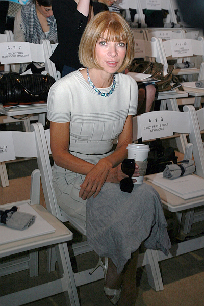
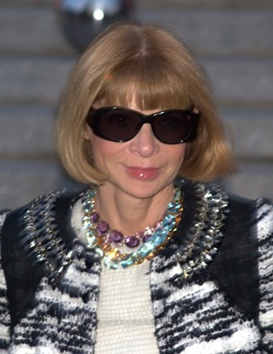

𝔸nna 𝕎intour
Biography
Family
Wintour was born in London, in 1949, to Charles Wintour (1917–1999), editor of the Evening Standard, and Eleanor "Nonie" Trego Baker (1917-1995), daughter of a Harvard law professor. Her parents married in 1940 and divorced in 1979. Wintour was named after her maternal grandmother, Anna Baker (born Gilkynson), a merchant's daughter from Pennsylvania. Audrey Slaughter, a magazine editor who founded publications such as Honey and Petticoat, is her stepmother. The late-18th-century novelist Lady Elizabeth Foster, Duchess of Devonshire, was Wintour's great-great-great-grandmother, and Sir Augustus Vere Foster, the last Baronet of that name, was a granduncle. She had four siblings. Her older brother, Gerald, died in a traffic accident as a child. One of her younger brothers, Patrick, is also a journalist, currently political editor of The Guardian. James and Nora Wintour have worked in London local government and for international non-governmental organisations respectively.
Early life
In her youth, Wintour was educated at the independent North London Collegiate School, where she frequently rebelled against the dress code by taking up the hemlines of her skirts. At the age of 14, she began wearing her hair in a bob. She developed an interest in fashion as a regular viewer of Cathy McGowan on Ready Steady Go!, and from the issues of Seventeen her grandmother sent from America. "Growing up in London in the '60s, you'd have to have had Irving Penn's sack over your head not to know something extraordinary was happening in fashion," she recalled. Her father regularly consulted her when he was considering ideas for increasing readership in the youth market. At the age of 15, she began dating well-connected older men. She was involved briefly with Piers Paul Read, then 24. In her later teens, she and gossip columnist Nigel Dempster became a fixture on the London club circuit.
Personal life
She had two children by David Shaffer following their 1984 marriage: Charles (Charlie) born 1985, and Katherine (known as Bee) born 1987. The latter wrote occasional columns for The Daily Telegraph in 2006, but says she won't follow her mother into fashion. The couple divorced in 1999. Newspapers and gossip columnists claimed her affair with investor Shelby Bryan ended the marriage. She declined to comment. Her friends say Bryan has mellowed her. "She smiles now and has been seen to laugh," the Observer quoted one as saying. Wintour is also a philanthropist. She serves as a trustee of the Metropolitan Museum of Art in New York, where she has organised benefits that have raised $50 million for the museum's Costume Institute. She began the CFDA/Vogue Fund in order to encourage, support and mentor unknown fashion designers. She has also raised over $10 million for AIDS charities since 1990, by organising various high profile benefits. She claims to rise before 6 am, plays tennis and has her hair and makeup done, then gets to Vogue's offices two hours later. She always arrives at fashion shows well before their scheduled start. "I use the waiting time to make phone calls and notes; I get some of my best ideas at the shows," she says. According to the BBC documentary series Boss Woman, she rarely stays at parties for more than 20 minutes at a time and gets to bed by 10:15 every night. She exerts a great deal of control over the magazine's visual content. Since her first days as editor, she has required that photographers not begin until she has approved Polaroids of the setup and clothing. Afterwards, they must submit all their work to the magazine, not just their personal choices. Her control over the text is less certain. Her staffers claim she reads everything written for publication, but former editor Richard Story has claimed she rarely, if ever, read any of Vogue's arts coverage or book reviews. Earlier in her career, she often left the task of writing the text accompanying her layouts to others; former coworkers claim she has minimal skills in that area. Today, she writes little for the magazine save the monthly editor's letter. She reportedly has three full-time assistants but sometimes surprises callers by answering the phone herself. She often turns her cell phone off in order to eat her lunch, usually a steak (or bunless hamburger), undisturbed. High-protein meals have been a habit of hers for a long time. "It was smoked salmon and scrambled eggs every single day" for lunch, says a coworker at Harpers & Queen. "She would eat nothing else."
Personal fashion preferences
Because of her position, Wintour's wardrobe is often closely scrutinised and imitated. Earlier in her career, she mixed fashionable T-shirts and vests with designer jeans. When she started at Vogue as creative director she switched to Chanel suits with miniskirts. She continued to wear them during both pregnancies, opening the skirts slightly in back and keeping her jacket on to cover up. Wintour was listed as "one of the fifty best-dressed over 50s" by the Guardian in March 2013. According to biographer Jerry Oppenheimer, her ubiquitous sunglasses are actually corrective lenses, since she suffers from deteriorating vision as her father did. A former colleague he interviewed recalls trying on her Wayfarers in her absence and getting dizzy. "I think at this point they've become, you know, really armour," Wintour herself told 60 Minutes correspondent Morley Safer, explaining that they allow her to keep her reactions to a show private. As she rebounded from the end of her marriage and the turnover in the magazine's editorial staff, a fellow editor and friend noted that "she's not hiding behind her glasses anymore. Now she's having fun again."
Politics
Wintour has been a supporter of the Democratic Party, since Hillary Clinton's 2000 Senate run and John Kerry's 2004 presidential run and serving Barack Obama's 2008 and 2012 presidential runs as a "bundler" of contributions. In 2008 and 2012, she co-hosted fundraisers with Sarah Jessica Parker, the latter being a 50-person, $40,000-a-plate dinner at Parker's West Village town house with Meryl Streep, Michael Kors, and Trey Laird, an advertising executive, among the attendees. She has also teamed with Calvin Klein and Harvey Weinstein on fundraisers during Obama's first term and Donna Karan has been amongst the attendees. In 2013 when Vogue's former director of communications stepped down, Wintour was rumoured to be looking to hire someone with a political background. Soon after, Wintour hired Hildy Kuryk, a former fundraiser for the Democratic National Committee and Obama's first campaign. She also supported Hillary Clinton's 2016 Presidential Campaign, forming part of Clinton's long list of wealthy donators or "Hillblazers".